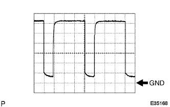
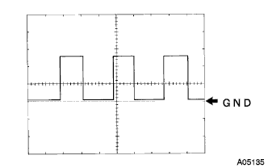
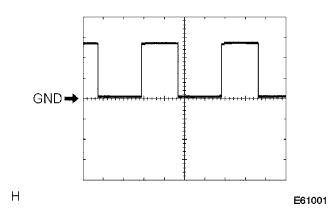

Hita & Air Condition Syona System ECU terminal array |
| Terminal symbol [Terman number] | Input and output | item | Measurement conditions | standard |
|---|---|---|---|---|
| AMH ← → GND [A1 ← → A13] | output | Voltage | IG Sweets ON Configuration temperature Max Cold → MAX HOT | 1V or less → 10-14V (Motor rotation) |
| AMC ← → GND [A2 ← → A13] | output | Voltage | IG Sweets ON Configuration temperature MAX HOT → MAX COLD | 1V or less → 10-14V (Motor rotation) |
| Face ← → GND [A5 ← → A13] | Input and output | Voltage | IG Sweets ON Other than the outlet mode other than face → face | 10-14V → 1V or less (motor is rotating) |
| B/L ← → GND [A6 ← → A13] | Input and output | Voltage | IG Sweets ON Other than the outlet mode other than the B/L → B/L | 10-14V → 1V or less (motor is rotating) |
| FOT1 ← → GND [A7 ← → A13] | Input and output | Voltage | IG Sweets ON Opening Extra Mode Mode Manual Foot → Manual FOOT | 10-14V → 1V or less (motor is rotating) |
| Foot2 ← → GND [A8 ← → A13] | Input and output | Voltage | IG Sweets ON Opening Extra Mode Mode Auto Foot → Auto Foot | 10-14V → 1V or less (motor is rotating) |
| F/d ← → GND [A9 ← → A13] | Input and output | Voltage | IG Sweets ON Other than the outlet mode F/D → F/D | 10-14V → 1V or less (motor is rotating) |
| DEF ← → GND [A10 ← → A13] | Input and output | Voltage | IG Sweets ON Opening Extra Mode DEF → DEF | 10-14V → 1V or less (motor is rotating) |
| BLW ← → GND [A11 ← → A13] | output | Voltage | IG Sweets ON Blow switch OFF → Auto | 1V or less → 10-14V |
| VM ← → GND [A12 ← → A13] | output | Voltage | IG Sweets ON Blow Switch LO → Hi | 9V → 1V or less |
| GND ← → Body Earth [A13 ← → Body Earth] | - | Conduction | Always | There is an conductor |
| SG-TP ← → Body Earth [A14 ← → Body Earth] | - | Conduction | Always | There is an conductor |
| S5-TP ← → GND [A15 ← → A13] | output | Voltage | IG Sweets ON | 4.5V-5.5V |
| TP ← → SG-TP [A16 ← → A14] | input | Voltage | IG Sweets ON Configuration temperature MAX HOT → MAX COLD | Approximately 1V → about 4V |
| TE ← → SG-TE [A17 ← → A32] | input | Voltage | IG Sweets ON Evaporator atmosphere temperature 0 ° C or 15 ° C | 0 ° C: 2.0-2.4V 15 ° C: 1.4-1.8V |
| +B ← → GND [A19 ← → A13] | input | Voltage | Always | 10-14V |
| IG ← → GND [A20 ← → A13] | input | Voltage | IG Sweets ON | 10-14V |
| ILL+← → GND [A21 ← → A13] | input | Voltage | IG Sweets ON Light control switch OFF → Tail | 1V or less → 10-14V |
| SPD ← → GND [A23 ← → A13] | input | Waveform | Run at about 20km/h | Pulse outbreak (Waveform 2) |
| REC ← → GND [A24 ← → A13] | output | Voltage | IG Sweets ON Sucking mouth mode outside air position → Inner position | 10-14V → 1V or less (motor is rotating) |
| FRS ← → GND [A25 ← → A13] | output | Voltage | IG Sweets ON Other than temperature setting MAX HOT Insert in the sucking mouth mode → Outside air position | 10-14V → 1V or less (motor is rotating) |
| R/F1 ← → GND [A26 ← → A13]* | output | Voltage | IG Sweets ON Water temperature 30 ° C or more Temperature setting MAX HOT Outout mode FOOT or F/D Blow Switch LO Insert in the sucking mouth mode → Outside air position | 10-14V → 1V or less (motor is rotating) |
| HR ← → GND [A28 ← → A13] | output | Voltage | IG Sweets ON Blow switch OFF → Lo | 10-14V → 1V or less |
| Warn ← → gnd [A29 ← → A13] | input | Voltage | The passenger seat seat belt has not been installed → attached (The passenger seat Belt Warnin Grand flashing → off) | 1V or less ← → 10-14V → 1V or less |
| RDEF ← → GND [A30 ← → A13] | output | Voltage | IG Sweets ON Rear Defoga Switch OFF → ON | 10-14V → 1V or less |
| SG-TR ← → Body Earth [A31 ← → Body Earth] | - | Conduction | Always | There is an conductor |
| SG-TE ← → Body Earth [A32 ← → Body Earth] | - | Conduction | Always | There is an conductor |
| SG-TAM ← → Body Earth [A33 ← → Body Earth] | - | Conduction | Always | There is an conductor |
| SG-TW ← → Body Earth [A34 ← → Body Earth] | - | Conduction | Always | There is an conductor |
| S5-TS ← → GND [A35 ← → A13] | output | Voltage | IG Sweets ON | 4.5V-5.5V |
| TS ← → GND [A37 ← → A13] | input | Conduction | IG Sweets ON Sushi -radius no solar radiation → illuminates sunlight or light | 0.8V or less 0.8-4.3V |
| TAM ← → SG-TAM [A38 ← → A33] | Input and output | Voltage | IG Sweets ON Outside air temperature 25 ° C or 40 ° C | 25 ° C: 1.35-1.75V 40 ° C: 0.85-1.25V |
| TW ← → SG-TW [A39 ← → A34] | Input and output | Voltage | IG Sweets ON Engine cooling water temperature 40 ° C or 70 ° C | 40 ° C: 2.0-2.4V 70 ° C: 1.2-1.6V |
| A/CS ← → GND [A40 ← → A13] | output | Voltage | When the engine idol rotates, the blower switch LO After Eva, 12 ° C or higher sensor A/C switch OFF → ON | 1V or less → 10-14V |
|  |
Waveform 1
| item | Content |
|---|---|
| Measuring terminal | BLW ← → GND |
| Instrument set | 1V/Div, 50μs/Div |
| Measurement conditions | Blow Switch LO |
|  |
Waveform 2
| item | Content |
|---|---|
| Measuring terminal | SPD ← → GND |
| Instrument set | 2V/Div, 20ms/Div |
| Measurement conditions | When running at about 20km/h |
| Terminal symbol [Terman number] | Input and output | item | Measurement conditions | standard |
|---|---|---|---|---|
| E2 ← → E1 [A28 ← → B7] | - | Conduction | Always | There is an conductor |
| HP ← → E1 [A13 ← → B7] | input | Voltage | Refrigerant pressure when normal → Refrigerant pressure 0.19MPa {2.0kgf/cm2} below Or refrigerant pressure 3.14MPa {32kgf/cm2} Or more | 1V or less → 10-14V |
| Terminal symbol [Terman number] | Input and output | item | Measurement conditions | standard |
|---|---|---|---|---|
| E1 ← → Body Earth [B7 ← → Body Earth] | - | Conduction | Always | There is an conductor |
| Terminal symbol [Terman number] | Input and output | item | Measurement conditions | standard |
|---|---|---|---|---|
| ACMG ← → E1 [C2 ← → B7] | output | Voltage | When the engine idol rotates, the blower switch LO A/C switch ON → OFF | 1V or less → Pulse generation (waveform 1) → 10-14V |
| AC1 ← → E1 [C31 ← → B7] | input | Voltage | When the engine idol rotates, the blower switch LO Evaporator atmosphere temperature 12 ° C or more A/C switch OFF → ON | 1V or less → 10-14V |
| Thr ← → E2 [C32 ← → A28] | output | Voltage | IG switch ON Evaporator atmosphere temperature 0 ° C or 15 ° C | 0 ° C: 2.0-2.4V 15 ° C: 1.4-1.8V |
| Terminal symbol [Terman number] | Input and output | item | Measurement conditions | standard |
|---|---|---|---|---|
| MHSW ← → E1*1 [D2 ← → B7] | output | Voltage | IG switch ON Temperature settings other than MAX HOT → MAX HOT | 1V or less → 10-14V |
|  |
| item | Content |
|---|---|
| Measuring terminal | ACMG ← → E1 |
| Instrument set | 5V/Div, 500μs/Div |
| Measurement conditions | When idol rotation, Blow Switch LO A/C switch ON → OFF |